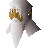

Necromancer
Location at 2669, 3243 · Kingdom of Kandarin
Open on the world map → Open in knowledge graph → Below: Necromancer (underground)
NPCs
| NPC | Level | Spawns | Notable drops |
|---|---|---|---|
| 46 | 1 | ||
| 42 | 5 | Coins, Steel bar, Black sq shield, Herb drop table | |
| 26 | 1 | Coins, Staff, Nature rune, Chaos rune | |
| 20 | 1 | Coins, Steel arrow, Iron dagger, Body talisman | |
| 20 | 1 | ||
| 20 | 7 | ||
| 2 | 5 | Bolt, Wizards hat, Hammer, Ball of wool | |
| 1 | 4 | Feather | |
| 1 | |||
| 2 | |||
 Captain Barnaby | 1 | ||
| shop | 1 | ||
| shop | 1 |